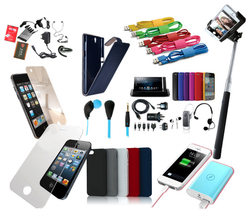

If You're In The Market For A Cell Phone Read This First
A cell phone can be a very useful device, but there is a lot more to these handheld wonders than just making phone calls. Once you know how, you can do a lot with your cell phone. No matter what you need to do, the following advice can be very useful.
When shopping for a cell phone, consider the features that you really need. Phones offer a lot of features in today's market, including Internet access, cameras and the ability to perform various apps. While all of these features are nice, it might not be worth paying for the most expensive phone if you won't use them. Think carefully before making your final selection.
If your phone gets wet, don't automatically assume it's dead. What you should do is remove the phone's battery, and then place your phone in a plastic bag of rice. This will allow moisture to get soaked up that is inside your device. باور بانك هيرو 20000
When buying your cellphone, make sure to consider bundles. Many companies offer them, and they can include things like a case or a car charger. It is often less expensive to buy all these items in a bundle than to buy them separately, and there is a good chance you will want some of the accessories.
Consider purchasing a used phone if you are looking to upgrade before your contract allows you to. This is often less expensive than buying new, and you will not be locked in to a specific contract period. Just make sure your provider supports the phone you want to buy, and that you can easily add it to your plan.
If you want to listen to music on your cell phone, you may want to install a cloud storage application. This way, you can save your favorites to it without using the memory in your phone. You can also do this with pictures. Additionally, it keeps your music and pictures safe if something happens to your phone.

Consider buying the insurance on your cell phone. This can save you money in the long run. If your phone is broken, stolen or in any way damaged, you will no longer be able to use it in most cases. This will require you to buy a new phone, and that can cost hundreds. Insurance allows you to buy a new phone for a discounted price, and that can be well worth the monthly investment. سماعات شاومي مي ترو
Use Talkster if you want to have free international calls during the day and night. This service will give you more ads than you are used to but will reduce the high costs that you will have to pay for calls outside of the country. This will save you a lot of money in the long run.
If you are looking to upgrade your cell phone and you are told you have to pay a large fee, you should try to negotiate. Companies do not want to lose valuable customers, so they may be willing to waive this. Even if they say no, it will not hurt to ask.
Haggle a bit when shopping for your next phone. You generally wouldn't expect haggling to work in a retail setting, but it is often effective in the case of buying a new cell phone. Try it for yourself. It can't hurt, and people often get between 50 and 100 dollars knocked off the price.
If you want to call someone and have the call go straight to voicemail without it ringing, you can use Slydial. This is a feature that eliminates the risk of someone answering your call. If a number has been calling you and you do not know who it is, this is a great service to employ.
Scroll through your cell phone directory and see which numbers you dial the most often or are the most important. Write or type out this short list, and keep it in your wallet or purse. Losing your cell phone can be bad enough, but losing all your phone numbers with it is even worse. This is especially true if you just left it at a friend's house and could find it in one phone call. شاشة حماية ايفون 12
Make sure your cellphone is protected. They're not cheap to fix! A screen protector can help make sure you don't scratch the screen. From there, think about picking up a hard case.
If you do not need a cellphone with internet connection capability, check out one of the several prepaid phones. These cellphones do not require that you sign a contract, and you can have phone service for as little as a few dollars a month. Many seniors prefer these phones since they are not interested in anything other than phone service away from home.
Having a cell phone is virtually a necessity in today's connected, always-on world. If you don't have your cell phone, you may feel cut off from all of your friends and family. With the tips and tricks you have just read, you can make sure that you are always connected to the people you love.